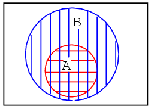
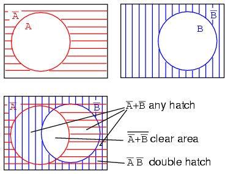
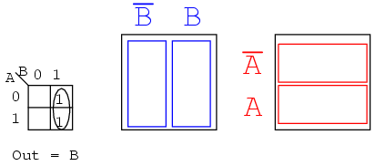
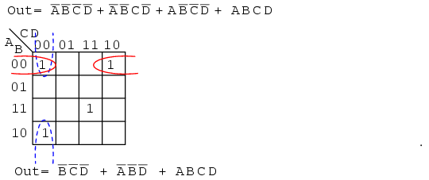
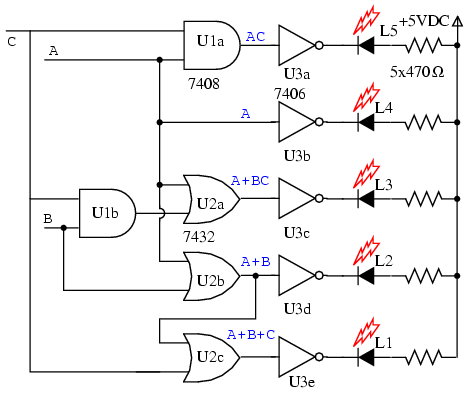

Original author: Dennis Crunkilton
Why learn about Karnaugh maps? The Karnaugh map, like Boolean algebra, is a simplification tool applicable to digital logic. See the "Toxic waste incinerator" in the Boolean algebra chapter for an example of Boolean simplification of digital logic. The Karnaugh Map will simplify logic faster and more easily in most cases.
Boolean simplification is actually faster than the Karnaugh map for a task involving two or fewer Boolean variables. It is still quite usable at three variables, but a bit slower. At four input variables, Boolean algebra becomes tedious. Karnaugh maps are both faster and easier. Karnaugh maps work well for up to six input variables, are usable for up to eight variables. For more than six to eight variables, simplification should be by CAD (computer automated design).
In theory any of the three methods will work. However, as a practical matter, the above guidelines work well. We would not normally resort to computer automation to simplify a three input logic block. We could sooner solve the problem with pencil and paper. However, if we had seven of these problems to solve, say for a BCD (Binary Coded Decimal) to seven segment decoder, we might want to automate the process. A BCD to seven segment decoder generates the logic signals to drive a seven segment LED (light emitting diode) display.
Examples of computer automated design languages for simplification of logic are PALASM, ABEL, CUPL, Verilog, and VHDL. These programs accept a hardware descriptor language input file which is based on Boolean equations and produce an output file describing a reduced (or simplified) Boolean solution. We will not require such tools in this chapter. Let's move on to Venn diagrams as an introduction to Karnaugh maps.
Mathematicians use Venn diagrams to show the logical relationships of sets (collections of objects) to one another. Perhaps you have already seen Venn diagrams in your algebra or other mathematics studies. If you have, you may remember overlapping circles and the union and intersection of sets. We will review the overlapping circles of the Venn diagram. We will adopt the terms OR and AND instead of union and intersection since that is the terminology used in digital electronics.
The Venn diagram bridges the Boolean algebra from a previous chapter to the Karnaugh Map. We will relate what you already know about Boolean algebra to Venn diagrams, then transition to Karnaugh maps.
A set is a collection of objects out of a universe as shown below. The members of the set are the objects contained within the set. The members of the set usually have something in common; though, this is not a requirement. Out of the universe of real numbers, for example, the set of all positive integers {1,2,3...} is a set. The set {3,4,5} is an example of a smaller set, or subset of the set of all positive integers. Another example is the set of all males out of the universe of college students. Can you think of some more examples of sets?
Above left, we have a Venn diagram showing the set A in the circle within the universe U, the rectangular area. If everything inside the circle is A, then anything outside of the circle is not A. Thus, above center, we label the rectangular area outside of the circle A as A-not instead of U. We show B and B-not in a similar manner.
What happens if both A and B are contained within the same universe? We show four possibilities.
Let's take a closer look at each of the the four possibilities as shown above.
The first example shows that set A and set B have nothing in common according to the Venn diagram. There is no overlap between the A and B circular hatched regions. For example, suppose that sets A and B contain the following members:
set A = {1,2,3,4}
set B = {5,6,7,8}
None of the members of set A are contained within set B, nor are any of the members of B contained within A. Thus, there is no overlap of the circles.

In the second example in the above Venn diagram, Set A is totally contained within set B How can we explain this situation? Suppose that sets A and B contain the following members:
set A = {1,2}
set B = {1,2,3,4,5,6,7,8}
All members of set A are also members of set B. Therefore, set A is a subset of Set B. Since all members of set A are members of set B, set A is drawn fully within the boundary of set B.
There is a fifth case, not shown, with the four examples. Hint: it is similar to the last (fourth) example. Draw a Venn diagram for this fifth case.
The third example above shows perfect overlap between set A and set B. It looks like both sets contain the same identical members. Suppose that sets A and B contain the following:
set A = {1,2,3,4} set B = {1,2,3,4}
Therefore,
Set A = Set B
Sets And B are identically equal because they both have the same identical members. The A and B regions within the corresponding Venn diagram above overlap completely. If there is any doubt about what the above patterns represent, refer to any figure above or below to be sure of what the circular regions looked like before they were overlapped.
The fourth example above shows that there is something in common between set A and set B in the overlapping region. For example, we arbitrarily select the following sets to illustrate our point:
set A = {1,2,3,4}
set B = {3,4,5,6}
Set A and Set B both have the elements 3 and 4 in common These elements are the reason for the overlap in the center common to A and B. We need to take a closer look at this situation
The fourth example has A partially overlapping B. Though, we will first look at the whole of all hatched area below, then later only the overlapping region. Let's assign some Boolean expressions to the regions above as shown below. Below left there is a red horizontal hatched area for A. There is a blue vertical hatched area for B.

If we look at the whole area of both, regardless of the hatch style, the sum total of all hatched areas, we get the illustration above right which corresponds to the inclusive OR function of A, B. The Boolean expression is A+B. This is shown by the 45o hatched area. Anything outside of the hatched area corresponds to (A+B)-not as shown above. Let's move on to next part of the fourth example
The other way of looking at a Venn diagram with overlapping circles is to look at just the part common to both A and B, the double hatched area below left. The Boolean expression for this common area corresponding to the AND function is AB as shown below right. Note that everything outside of double hatched AB is AB-not.
Note that some of the members of A, above, are members of (AB)'. Some of the members of B are members of (AB)'. But, none of the members of (AB)' are within the doubly hatched area AB.
We have repeated the second example above left. Your fifth example, which you previously sketched, is provided above right for comparison. Later we will find the occasional element, or group of elements, totally contained within another group in a Karnaugh map.
Next, we show the development of a Boolean expression involving a complemented variable below.
Example: (above)
Show a Venn diagram for A'B (A-not AND B).
Solution:
Starting above top left we have red horizontal shaded A' (A-not), then, top right, B. Next, lower left, we form the AND function A'B by overlapping the two previous regions. Most people would use this as the answer to the example posed. However, only the double hatched A'B is shown far right for clarity. The expression A'B is the region where both A' and B overlap. The clear region outside of A'B is (A'B)', which was not part of the posed example.
Let's try something similar with the Boolean OR function.
Example:
Find B'+A
Solution:
Above right we start out with B which is complemented to B'. Finally we overlay A on top of B'. Since we are interested in forming the OR function, we will be looking for all hatched area regardless of hatch style. Thus, A+B' is all hatched area above right. It is shown as a single hatch region below left for clarity.
Example:
Find (A+B')'
Solution:
The green 45o A+B' hatched area was the result of the previous example. Moving on to a to,(A+B')' ,the present example, above left, let us find the complement of A+B', which is the white clear area above left corresponding to (A+B')'. Note that we have repeated, at right, the AB' double hatched result from a previous example for comparison to our result. The regions corresponding to (A+B')' and AB' above left and right respectively are identical. This can be proven with DeMorgan's theorem and double negation.
This brings up a point. Venn diagrams don't actually prove anything. Boolean algebra is needed for formal proofs. However, Venn diagrams can be used for verification and visualization. We have verified and visualized DeMorgan's theorem with a Venn diagram.
Example:
What does the Boolean expression A'+B' look like on a Venn Diagram?

Solution: above figure
Start out with red horizontal hatched A' and blue vertical hatched B' above. Superimpose the diagrams as shown. We can still see the A' red horizontal hatch superimposed on the other hatch. It also fills in what used to be part of the B (B-true) circle, but only that part of the B open circle not common to the A open circle. If we only look at the B' blue vertical hatch, it fills that part of the open A circle not common to B. Any region with any hatch at all, regardless of type, corresponds to A'+B'. That is, everything but the open white space in the center.
Example:
What does the Boolean expression (A'+B')' look like on a Venn Diagram?
Solution: above figure, lower left
Looking at the white open space in the center, it is everything NOT in the previous solution of A'+B', which is (A'+B')'.
Example:
Show that (A'+B')' = AB
Solution: below figure, lower left
We previously showed on the above right diagram that the white open region is (A'+B')'. On an earlier example we showed a doubly hatched region at the intersection (overlay) of AB. This is the left and middle figures repeated here. Comparing the two Venn diagrams, we see that this open region , (A'+B')', is the same as the doubly hatched region AB (A AND B). We can also prove that (A'+B')'=AB by DeMorgan's theorem and double negation as shown above.
We show a three variable Venn diagram above with regions A (red horizontal), B (blue vertical), and, C (green 45o). In the very center note that all three regions overlap representing Boolean expression ABC. There is also a larger petal shaped region where A and B overlap corresponding to Boolean expression AB. In a similar manner A and C overlap producing Boolean expression AC. And B and C overlap producing Boolean expression BC.
Looking at the size of regions described by AND expressions above, we see that region size varies with the number of variables in the associated AND expression.
Starting with circle A in a rectangular A' universe in figure (a) below, we morph a Venn diagram into almost a Karnaugh map.
We expand circle A at (b) and (c), conform to the rectangular A' universe at (d), and change A to a rectangle at (e). Anything left outside of A is A' . We assign a rectangle to A' at (f). Also, we do not use shading in Karnaugh maps. What we have so far resembles a 1-variable Karnaugh map, but is of little utility. We need multiple variables.

Figure (a) above is the same as the previous Venn diagram showing A and A' above except that the labels A and A' are above the diagram instead of inside the respective regions. Imagine that we have go through a process similar to figures (a-f) to get a "square Venn diagram" for B and B' as we show in middle figure (b). We will now superimpose the diagrams in Figures (a) and (b) to get the result at (c), just like we have been doing for Venn diagrams. The reason we do this is so that we may observe that which may be common to two overlapping regions-- say where A overlaps B. The lower right cell in figure (c) corresponds to AB where A overlaps B.

We don't waste time drawing a Karnaugh map like (c) above, sketching a simplified version as above left instead. The column of two cells under A' is understood to be associated with A', and the heading A is associated with the column of cells under it. The row headed by B' is associated with the cells to the right of it. In a similar manner B is associated with the cells to the right of it. For the sake of simplicity, we do not delineate the various regions as clearly as with Venn diagrams.
The Karnaugh map above right is an alternate form used in most texts. The names of the variables are listed next to the diagonal line. The A above the diagonal indicates that the variable A (and A') is assigned to the columns. The 0 is a substitute for A', and the 1 substitutes for A. The B below the diagonal is associated with the rows: 0 for B', and 1 for B
Example:
Mark the cell corresponding to the Boolean expression AB in the Karnaugh map above with a 1
Solution:
Shade or circle the region corresponding to A. Then, shade or enclose the region corresponding to B. The overlap of the two regions is AB. Place a 1 in this cell. We do not necessarily enclose the A and B regions as at above left.
We develop a 3-variable Karnaugh map above, starting with Venn diagram like regions. The universe (inside the black rectangle) is split into two narrow narrow rectangular regions for A' and A. The variables B' and B divide the universe into two square regions. C occupies a square region in the middle of the rectangle, with C' split into two vertical rectangles on each side of the C square.
In the final figure, we superimpose all three variables, attempting to clearly label the various regions. The regions are less obvious without color printing, more obvious when compared to the other three figures. This 3-variable K-Map (Karnaugh map) has 23 = 8 cells, the small squares within the map. Each individual cell is uniquely identified by the three Boolean Variables (A, B, C). For example, ABC' uniquely selects the lower right most cell(*), A'B'C' selects the upper left most cell (x).
We don't normally label the Karnaugh map as shown above left. Though this figure clearly shows map coverage by single boolean variables of a 4-cell region. Karnaugh maps are labeled like the illustration at right. Each cell is still uniquely identified by a 3-variable product term, a Boolean AND expression. Take, for example, ABC' following the A row across to the right and the BC' column down, both intersecting at the lower right cell ABC'. See (*) above figure.
The above two different forms of a 3-variable Karnaugh map are equivalent, and is the final form that it takes. The version at right is a bit easier to use, since we do not have to write down so many boolean alphabetic headers and complement bars, just 1s and 0s Use the form of map on the right and look for the the one at left in some texts. The column headers on the left B'C', B'C, BC, BC' are equivalent to 00, 01, 11, 10 on the right. The row headers A, A' are equivalent to 0, 1 on the right map.
Maurice Karnaugh, a telecommunications engineer, developed the Karnaugh map at Bell Labs in 1953 while designing digital logic based telephone switching circuits.
Now that we have developed the Karnaugh map with the aid of Venn diagrams, let's put it to use. Karnaugh maps reduce logic functions more quickly and easily compared to Boolean algebra. By reduce we mean simplify, reducing the number of gates and inputs. We like to simplify logic to a lowest cost form to save costs by elimination of components. We define lowest cost as being the lowest number of gates with the lowest number of inputs per gate.
Given a choice, most students do logic simplification with Karnaugh maps rather than Boolean algebra once they learn this tool.
We show five individual items above, which are just different ways of representing the same thing: an arbitrary 2-input digital logic function. First is relay ladder logic, then logic gates, a truth table, a Karnaugh map, and a Boolean equation. The point is that any of these are equivalent. Two inputs A and B can take on values of either 0 or 1, high or low, open or closed, True or False, as the case may be. There are 22 = 4 combinations of inputs producing an output. This is applicable to all five examples.
These four outputs may be observed on a lamp in the relay ladder logic, on a logic probe on the gate diagram. These outputs may be recorded in the truth table, or in the Karnaugh map. Look at the Karnaugh map as being a rearranged truth table. The Output of the Boolean equation may be computed by the laws of Boolean algebra and transfered to the truth table or Karnaugh map. Which of the five equivalent logic descriptions should we use? The one which is most useful for the task to be accomplished.
The outputs of a truth table correspond on a one-to-one basis to Karnaugh map entries. Starting at the top of the truth table, the A=0, B=0 inputs produce an output α. Note that this same output α is found in the Karnaugh map at the A=0, B=0 cell address, upper left corner of K-map where the A=0 row and B=0 column intersect. The other truth table outputs β, χ, δ from inputs AB=01, 10, 11 are found at corresponding K-map locations.
Below, we show the adjacent 2-cell regions in the 2-variable K-map with the aid of previous rectangular Venn diagram like Boolean regions.
Cells α and χ are adjacent in the K-map as ellipses in the left most K-map below. Referring to the previous truth table, this is not the case. There is another truth table entry (β) between them. Which brings us to the whole point of the organizing the K-map into a square array, cells with any Boolean variables in common need to be close to one another so as to present a pattern that jumps out at us. For cells α and χ they have the Boolean variable B' in common. We know this because B=0 (same as B') for the column above cells α and χ. Compare this to the square Venn diagram above the K-map.
A similar line of reasoning shows that β and δ have Boolean B (B=1) in common. Then, α and β have Boolean A' (A=0) in common. Finally, χ and δ have Boolean A (A=1) in common. Compare the last two maps to the middle square Venn diagram.
To summarize, we are looking for commonality of Boolean variables among cells. The Karnaugh map is organized so that we may see that commonality. Let's try some examples.
Example:
Transfer the contents of the truth table to the Karnaugh map above.
Solution:
The truth table contains two 1s. the K- map must have both of them. locate the first 1 in the 2nd row of the truth table above.
Example:
For the Karnaugh map in the above problem, write the Boolean expression. Solution is below.

Solution:
Look for adjacent cells, that is, above or to the side of a cell. Diagonal cells are not adjacent. Adjacent cells will have one or more Boolean variables in common.
This might be easier to see by comparing to the Venn diagrams to the right, specifically the B column.
Example:
Write the Boolean expression for the Karnaugh map below.
Solution: (above)
Example:
For the Truth table below, transfer the outputs to the Karnaugh, then write the Boolean expression for the result.
Solution:
Transfer the 1s from the locations in the Truth table to the corresponding locations in the K-map.
We need to point out that either of the above solutions, Output or Wrong Output, are logically correct. Both circuits yield the same output. It is a matter of the former circuit being the lowest cost solution.
Example:
Fill in the Karnaugh map for the Boolean expression below, then write the Boolean expression for the result.
Solution: (above)
The Boolean expression has three product terms. There will be a 1 entered for each product term. Though, in general, the number of 1s per product term varies with the number of variables in the product term compared to the size of the K-map. The product term is the address of the cell where the 1 is entered. The first product term, A'B, corresponds to the 01 cell in the map. A 1 is entered in this cell. The other two P-terms are entered for a total of three 1s
Next, proceed with grouping and extracting the simplified result as in the previous truth table problem.
Example:
Simplify the logic diagram below.
Solution: (Figure below)
Example:
Simplify the logic diagram below.
Solution:
No logic simplification is possible for the above diagram. This sometimes happens. Neither the methods of Karnaugh maps nor Boolean algebra can simplify this logic further. We show an Exclusive-OR schematic symbol above; however, this is not a logical simplification. It just makes a schematic diagram look nicer. Since it is not possible to simplify the Exclusive-OR logic and it is widely used, it is provided by manufacturers as a basic integrated circuit (7486).
The logic simplification examples that we have done so could have been performed with Boolean algebra about as quickly. Real world logic simplification problems call for larger Karnaugh maps so that we may do serious work. We will work some contrived examples in this section, leaving most of the real world applications for the Combinatorial Logic chapter. By contrived, we mean examples which illustrate techniques. This approach will develop the tools we need to transition to the more complex applications in the Combinatorial Logic chapter.
We show our previously developed Karnaugh map. We will use the form on the right.
Note the sequence of numbers across the top of the map. It is not in binary sequence which would be 00, 01, 10, 11. It is 00, 01, 11 10, which is Gray code sequence. Gray code sequence only changes one binary bit as we go from one number to the next in the sequence, unlike binary. That means that adjacent cells will only vary by one bit, or Boolean variable. This is what we need to organize the outputs of a logic function so that we may view commonality. Moreover, the column and row headings must be in Gray code order, or the map will not work as a Karnaugh map. Cells sharing common Boolean variables would no longer be adjacent, nor show visual patterns. Adjacent cells vary by only one bit because a Gray code sequence varies by only one bit.
If we sketch our own Karnaugh maps, we need to generate Gray code for any size map that we may use. This is how we generate Gray code of any size.
Note that the Gray code sequence, above right, only varies by one bit as we go down the list, or bottom to top up the list. This property of Gray code is often useful in digital electronics in general. In particular, it is applicable to Karnaugh maps.
Let us move on to some examples of simplification with 3-variable Karnaugh maps. We show how to map the product terms of the unsimplified logic to the K-map. We illustrate how to identify groups of adjacent cells which leads to a Sum-of-Products simplification of the digital logic.
Above we, place the 1's in the K-map for each of the product terms, identify a group of two, then write a p-term (product term) for the sole group as our simplified result.
Mapping the four product terms above yields a group of four covered by Boolean A'
Mapping the four p-terms yields a group of four, which is covered by one variable C.
After mapping the six p-terms above, identify the upper group of four, pick up the lower two cells as a group of four by sharing the two with two more from the other group. Covering these two with a group of four gives a simpler result. Since there are two groups, there will be two p-terms in the Sum-of-Products result A'+B
The two product terms above form one group of two and simplifies to BC
Mapping the four p-terms yields a single group of four, which is B
Mapping the four p-terms above yields a group of four. Visualize the group of four by rolling up the ends of the map to form a cylinder, then the cells are adjacent. We normally mark the group of four as above left. Out of the variables A, B, C, there is a common variable: C'. C' is a 0 over all four cells. Final result is C'.
The six cells above from the unsimplified equation can be organized into two groups of four. These two groups should give us two p-terms in our simplified result of A' + C'.
Below, we revisit the Toxic Waste Incinerator from the Boolean algebra chapter. See Boolean algebra chapter for details on this example. We will simplify the logic using a Karnaugh map.
The Boolean equation for the output has four product terms. Map four 1's corresponding to the p-terms. Forming groups of cells, we have three groups of two. There will be three p-terms in the simplified result, one for each group. See "Toxic Waste Incinerator", Boolean algebra chapter for a gate diagram of the result, which is reproduced below.

Below we repeat the Boolean algebra simplification of Toxic waste incinerator for comparison.

Below we repeat the Toxic waste incinerator Karnaugh map solution for comparison to the above Boolean algebra simplification. This case illustrates why the Karnaugh map is widely used for logic simplification.
The Karnaugh map method looks easier than the previous page of boolean algebra.
Knowing how to generate Gray code should allow us to build larger maps. Actually, all we need to do is look at the left to right sequence across the top of the 3-variable map, and copy it down the left side of the 4-variable map. See below.
The following four variable Karnaugh maps illustrate reduction of Boolean expressions too tedious for Boolean algebra. Reductions could be done with Boolean algebra. However, the Karnaugh map is faster and easier, especially if there are many logic reductions to do.
The above Boolean expression has seven product terms. They are mapped top to bottom and left to right on the K-map above. For example, the first P-term A'B'CD is first row 3rd cell, corresponding to map location A=0, B=0, C=1, D=1. The other product terms are placed in a similar manner. Encircling the largest groups possible, two groups of four are shown above. The dashed horizontal group corresponds the the simplified product term AB. The vertical group corresponds to Boolean CD. Since there are two groups, there will be two product terms in the Sum-Of-Products result of Out=AB+CD.
Fold up the corners of the map below like it is a napkin to make the four cells physically adjacent.
The four cells above are a group of four because they all have the Boolean variables B' and D' in common. In other words, B=0 for the four cells, and D=0 for the four cells. The other variables (A, B) are 0 in some cases, 1 in other cases with respect to the four corner cells. Thus, these variables (A, B) are not involved with this group of four. This single group comes out of the map as one product term for the simplified result: Out=B'C'
For the K-map below, roll the top and bottom edges into a cylinder forming eight adjacent cells.
The above group of eight has one Boolean variable in common: B=0. Therefore, the one group of eight is covered by one p-term: B'. The original eight term Boolean expression simplifies to Out=B'
The Boolean expression below has nine p-terms, three of which have three Booleans instead of four. The difference is that while four Boolean variable product terms cover one cell, the three Boolean p-terms cover a pair of cells each.
The six product terms of four Boolean variables map in the usual manner above as single cells. The three Boolean variable terms (three each) map as cell pairs, which is shown above. Note that we are mapping p-terms into the K-map, not pulling them out at this point.
For the simplification, we form two groups of eight. Cells in the corners are shared with both groups. This is fine. In fact, this leads to a better solution than forming a group of eight and a group of four without sharing any cells. Final Solution is Out=B'+D'
Below we map the unsimplified Boolean expression to the Karnaugh map.

Above, three of the cells form into a groups of two cells. A fourth cell cannot be combined with anything, which often happens in "real world" problems. In this case, the Boolean p-term ABCD is unchanged in the simplification process. Result: Out= B'C'D'+A'B'D'+ABCD
Often times there is more than one minimum cost solution to a simplification problem. Such is the case illustrated below.
Both results above have four product terms of three Boolean variable each. Both are equally valid minimal cost solutions. The difference in the final solution is due to how the cells are grouped as shown above. A minimal cost solution is a valid logic design with the minimum number of gates with the minimum number of inputs.
Below we map the unsimplified Boolean equation as usual and form a group of four as a first simplification step. It may not be obvious how to pick up the remaining cells.
Pick up three more cells in a group of four, center above. There are still two cells remaining. the minimal cost method to pick up those is to group them with neighboring cells as groups of four as at above right.
On a cautionary note, do not attempt to form groups of three. Groupings must be powers of 2, that is, 1, 2, 4, 8 ...
Below we have another example of two possible minimal cost solutions. Start by forming a couple of groups of four after mapping the cells.
The two solutions depend on whether the single remaining cell is grouped with the first or the second group of four as a group of two cells. That cell either comes out as either ABC' or ABD, your choice. Either way, this cell is covered by either Boolean product term. Final results are shown above.
Below we have an example of a simplification using the Karnaugh map at left or Boolean algebra at right. Plot C' on the map as the area of all cells covered by address C=0, the 8-cells on the left of the map. Then, plot the single ABCD cell. That single cell forms a group of 2-cell as shown, which simplifies to P-term ABD, for an end result of Out = C' + ABD.
This (above) is a rare example of a four variable problem that can be reduced with Boolean algebra without a lot of work, assuming that you remember the theorems.
So far we have been finding Sum-Of-Product (SOP) solutions to logic reduction problems. For each of these SOP solutions, there is also a Product-Of-Sums solution (POS), which could be more useful, depending on the application. Before working a Product-Of-Sums solution, we need to introduce some new terminology. The procedure below for mapping product terms is not new to this chapter. We just want to establish a formal procedure for minterms for comparison to the new procedure for maxterms.
A minterm is a Boolean expression resulting in 1 for the output of a single cell, and 0s for all other cells in a Karnaugh map, or truth table. If a minterm has a single 1 and the remaining cells as 0s, it would appear to cover a minimum area of 1s. The illustration above left shows the minterm ABC, a single product term, as a single 1 in a map that is otherwise 0s. We have not shown the 0s in our Karnaugh maps up to this point, as it is customary to omit them unless specifically needed. Another minterm A'BC' is shown above right. The point to review is that the address of the cell corresponds directly to the minterm being mapped. That is, the cell 111 corresponds to the minterm ABC above left. Above right we see that the minterm A'BC' corresponds directly to the cell 010. A Boolean expression or map may have multiple minterms.
Referring to the above figure, Let's summarize the procedure for placing a minterm in a K-map:
A Boolean expression will more often than not consist of multiple minterms corresponding to multiple cells in a Karnaugh map as shown above. The multiple minterms in this map are the individual minterms which we examined in the previous figure above. The point we review for reference is that the 1s come out of the K-map as a binary cell address which converts directly to one or more product terms. By directly we mean that a 0 corresponds to a complemented variable, and a 1 corresponds to a true variable. Example: 010 converts directly to A'BC'. There was no reduction in this example. Though, we do have a Sum-Of-Products result from the minterms.
Referring to the above figure, Let's summarize the procedure for writing the Sum-Of-Products reduced Boolean equation from a K-map:
Nothing new so far, a formal procedure has been written down for dealing with minterms. This serves as a pattern for dealing with maxterms.
Next we attack the Boolean function which is 0 for a single cell and 1s for all others.
A maxterm is a Boolean expression resulting in a 0 for the output of a single cell expression, and 1s for all other cells in the Karnaugh map, or truth table. The illustration above left shows the maxterm (A+B+C), a single sum term, as a single 0 in a map that is otherwise 1s. If a maxterm has a single 0 and the remaining cells as 1s, it would appear to cover a maximum area of 1s.
There are some differences now that we are dealing with something new, maxterms. The maxterm is a 0, not a 1 in the Karnaugh map. A maxterm is a sum term, (A+B+C) in our example, not a product term.
It also looks strange that (A+B+C) is mapped into the cell 000. For the equation Out=(A+B+C)=0, all three variables (A, B, C) must individually be equal to 0. Only (0+0+0)=0 will equal 0. Thus we place our sole 0 for minterm (A+B+C) in cell A,B,C=000 in the K-map, where the inputs are all0 . This is the only case which will give us a 0 for our maxterm. All other cells contain 1s because any input values other than ((0,0,0) for (A+B+C) yields 1s upon evaluation.
Referring to the above figure, the procedure for placing a maxterm in the K-map is:
Another maxterm A'+B'+C' is shown above. Numeric 000 corresponds to A'+B'+C'. The complement is 111. Place a 0 for maxterm (A'+B'+C') in this cell (1,1,1) of the K-map as shown above.
Why should (A'+B'+C') cause a 0 to be in cell 111? When A'+B'+C' is (1'+1'+1'), all 1s in, which is (0+0+0) after taking complements, we have the only condition that will give us a 0. All the 1s are complemented to all 0s, which is 0 when ORed.
A Boolean Product-Of-Sums expression or map may have multiple maxterms as shown above. Maxterm (A+B+C) yields numeric 111 which complements to 000, placing a 0 in cell (0,0,0). Maxterm (A+B+C') yields numeric 110 which complements to 001, placing a 0 in cell (0,0,1).
Now that we have the k-map setup, what we are really interested in is showing how to write a Product-Of-Sums reduction. Form the 0s into groups. That would be a group of two below. Write the binary value corresponding to the sum-term which is (0,0,X). Both A and B are 0 for the group. But, C is both 0 and 1 so we write an X as a place holder for C. Form the complement (1,1,X). Write the Sum-term (A+B) discarding the C and the X which held its' place. In general, expect to have more sum-terms multiplied together in the Product-Of-Sums result. Though, we have a simple example here.
Let's summarize the procedure for writing the Product-Of-Sums Boolean reduction for a K-map:
Example:
Simplify the Product-Of-Sums Boolean expression below, providing a result in POS form.

Solution:
Transfer the seven maxterms to the map below as 0s. Be sure to complement the input variables in finding the proper cell location.
We map the 0s as they appear left to right top to bottom on the map above. We locate the last three maxterms with leader lines..
Once the cells are in place above, form groups of cells as shown below. Larger groups will give a sum-term with fewer inputs. Fewer groups will yield fewer sum-terms in the result.
We have three groups, so we expect to have three sum-terms in our POS result above. The group of 4-cells yields a 2-variable sum-term. The two groups of 2-cells give us two 3-variable sum-terms. Details are shown for how we arrived at the Sum-terms above. For a group, write the binary group input address, then complement it, converting that to the Boolean sum-term. The final result is product of the three sums.
Example:
Simplify the Product-Of-Sums Boolean expression below, providing a result in SOP form.
Solution:
This looks like a repeat of the last problem. It is except that we ask for a Sum-Of-Products Solution instead of the Product-Of-Sums which we just finished. Map the maxterm 0s from the Product-Of-Sums given as in the previous problem, below left.
Then fill in the implied 1s in the remaining cells of the map above right.
Form groups of 1s to cover all 1s. Then write the Sum-Of-Products simplified result as in the previous section of this chapter. This is identical to a previous problem.
Above we show both the Product-Of-Sums solution, from the previous example, and the Sum-Of-Products solution from the current problem for comparison. Which is the simpler solution? The POS uses 3-OR gates and 1-AND gate, while the SOP uses 3-AND gates and 1-OR gate. Both use four gates each. Taking a closer look, we count the number of gate inputs. The POS uses 8-inputs; the SOP uses 7-inputs. By the definition of minimal cost solution, the SOP solution is simpler. This is an example of a technically correct answer that is of little use in the real world.
The better solution depends on complexity and the logic family being used. The SOP solution is usually better if using the TTL logic family, as NAND gates are the basic building block, which works well with SOP implementations. On the other hand, A POS solution would be acceptable when using the CMOS logic family since all sizes of NOR gates are available.

The gate diagrams for both cases are shown above, Product-Of-Sums left, and Sum-Of-Products right.
Below, we take a closer look at the Sum-Of-Products version of our example logic, which is repeated at left.
Above all AND gates at left have been replaced by NAND gates at right.. The OR gate at the output is replaced by a NAND gate. To prove that AND-OR logic is equivalent to NAND-NAND logic, move the inverter invert bubbles at the output of the 3-NAND gates to the input of the final NAND as shown in going from above right to below left.
Above right we see that the output NAND gate with inverted inputs is logically equivalent to an OR gate by DeMorgan's theorem and double negation. This information is useful in building digital logic in a laboratory setting where TTL logic family NAND gates are more readily available in a wide variety of configurations than other types.
The Procedure for constructing NAND-NAND logic, in place of AND-OR logic is as follows:
Example:
Let us revisit a previous problem involving an SOP minimization. Produce a Product-Of-Sums solution. Compare the POS solution to the previous SOP.
Solution:
Above left we have the original problem starting with a 9-minterm Boolean unsimplified expression. Reviewing, we formed four groups of 4-cells to yield a 4-product-term SOP result, lower left.
In the middle figure, above, we fill in the empty spaces with the implied 0s. The 0s form two groups of 4-cells. The solid blue group is (A'+B), the dashed red group is (C'+D). This yields two sum-terms in the Product-Of-Sums result, above right Out = (A'+B)(C'+D)
Comparing the previous SOP simplification, left, to the POS simplification, right, shows that the POS is the least cost solution. The SOP uses 5-gates total, the POS uses only 3-gates. This POS solution even looks attractive when using TTL logic due to simplicity of the result. We can find AND gates and an OR gate with 2-inputs.
The SOP and POS gate diagrams are shown above for our comparison problem.
Given the pin-outs for the TTL logic family integrated circuit gates below, label the maxterm diagram above right with Circuit designators (U1-a, U1-b, U2-a, etc), and pin numbers.
Each integrated circuit package that we use will receive a circuit designator: U1, U2, U3. To distinguish between the individual gates within the package, they are identified as a, b, c, d, etc. The 7404 hex-inverter package is U1. The individual inverters in it are are U1-a, U1-b, U1-c, etc. U2 is assigned to the 7432 quad OR gate. U3 is assigned to the 7408 quad AND gate. With reference to the pin numbers on the package diagram above, we assign pin numbers to all gate inputs and outputs on the schematic diagram below.
We can now build this circuit in a laboratory setting. Or, we could design a printed circuit board for it. A printed circuit board contains copper foil "wiring" backed by a non conductive substrate of phenolic, or epoxy-fiberglass. Printed circuit boards are used to mass produce electronic circuits. Ground the inputs of unused gates.
Label the previous POS solution diagram above left (third figure back) with Circuit designators and pin numbers. This will be similar to what we just did.
We can find 2-input AND gates, 7408 in the previous example. However, we have trouble finding a 4-input OR gate in our TTL catalog. The only kind of gate with 4-inputs is the 7420 NAND gate shown above right.
We can make the 4-input NAND gate into a 4-input OR gate by inverting the inputs to the NAND gate as shown below. So we will use the 7420 4-input NAND gate as an OR gate by inverting the inputs.
We will not use discrete inverters to invert the inputs to the 7420 4-input NAND gate, but will drive it with 2-input NAND gates in place of the AND gates called for in the SOP, minterm, solution. The inversion at the output of the 2-input NAND gates supply the inversion for the 4-input OR gate.
The result is shown above. It is the only practical way to actually build it with TTL gates by using NAND-NAND logic replacing AND-OR logic.
For reference, this section introduces the terminology used in some texts to describe the minterms and maxterms assigned to a Karnaugh map. Otherwise, there is no new material here.
Σ (sigma) indicates sum and lower case "m" indicates minterms. Σm indicates sum of minterms. The following example is revisited to illustrate our point. Instead of a Boolean equation description of unsimplified logic, we list the minterms.
f(A,B,C,D) = Σ m(1, 2, 3, 4, 5, 7, 8, 9, 11, 12, 13, 15)
or
f(A,B,C,D) = Σ(m1,m2,m3,m4,m5,m7,m8,m9,m11,m12,m13,m15)
The numbers indicate cell location, or address, within a Karnaugh map as shown below right. This is certainly a compact means of describing a list of minterms or cells in a K-map.
The Sum-Of-Products solution is not affected by the new terminology. The minterms, 1s, in the map have been grouped as usual and a Sum-OF-Products solution written.
Below, we show the terminology for describing a list of maxterms. Product is indicated by the Greek Π (pi), and upper case "M" indicates maxterms. ΠM indicates product of maxterms. The same example illustrates our point. The Boolean equation description of unsimplified logic, is replaced by a list of maxterms.
f(A,B,C,D) = Π M(2, 6, 8, 9, 10, 11, 14)
or
f(A,B,C,D) = Π(M2, M6, M8, M9, M10, M11, M14)
Once again, the numbers indicate K-map cell address locations. For maxterms this is the location of 0s, as shown below. A Product-OF-Sums solution is completed in the usual manner.
Up to this point we have considered logic reduction problems where the input conditions were completely specified. That is, a 3-variable truth table or Karnaugh map had 2n = 23 or 8-entries, a full table or map. It is not always necessary to fill in the complete truth table for some real-world problems. We may have a choice to not fill in the complete table.
For example, when dealing with BCD (Binary Coded Decimal) numbers encoded as four bits, we may not care about any codes above the BCD range of (0, 1, 2...9). The 4-bit binary codes for the hexadecimal numbers (Ah, Bh, Ch, Eh, Fh) are not valid BCD codes. Thus, we do not have to fill in those codes at the end of a truth table, or K-map, if we do not care to. We would not normally care to fill in those codes because those codes (1010, 1011, 1100, 1101, 1110, 1111) will never exist as long as we are dealing only with BCD encoded numbers. These six invalid codes are don't cares as far as we are concerned. That is, we do not care what output our logic circuit produces for these don't cares.
Don't cares in a Karnaugh map, or truth table, may be either 1s or 0s, as long as we don't care what the output is for an input condition we never expect to see. We plot these cells with an asterisk, *, among the normal 1s and 0s. When forming groups of cells, treat the don't care cell as either a 1 or a 0, or ignore the don't cares. This is helpful if it allows us to form a larger group than would otherwise be possible without the don't cares. There is no requirement to group all or any of the don't cares. Only use them in a group if it simplifies the logic.
Above is an example of a logic function where the desired output is 1 for input ABC = 101 over the range from 000 to 101. We do not care what the output is for the other possible inputs (110, 111). Map those two as don't cares. We show two solutions. The solution on the right Out = AB'C is the more complex solution since we did not use the don't care cells. The solution in the middle, Out=AC, is less complex because we grouped a don't care cell with the single 1 to form a group of two. The third solution, a Product-Of-Sums on the right, results from grouping a don't care with three zeros forming a group of four 0s. This is the same, less complex, Out=AC. We have illustrated that the don't care cells may be used as either 1s or 0s, whichever is useful.
The electronics class of Lightning State College has been asked to build the lamp logic for a stationary bicycle exhibit at the local science museum. As a rider increases his pedaling speed, lamps will light on a bar graph display. No lamps will light for no motion. As speed increases, the lower lamp, L1 lights, then L1 and L2, then, L1, L2, and L3, until all lamps light at the highest speed. Once all the lamps illuminate, no further increase in speed will have any effect on the display.
A small DC generator coupled to the bicycle tire outputs a voltage proportional to speed. It drives a tachometer board which limits the voltage at the high end of speed where all lamps light. No further increase in speed can increase the voltage beyond this level. This is crucial because the downstream A to D (Analog to Digital) converter puts out a 3-bit code, ABC, 23 or 8-codes, but we only have five lamps. A is the most significant bit, C the least significant bit.
The lamp logic needs to respond to the six codes out of the A to D. For ABC=000, no motion, no lamps light. For the five codes (001 to 101) lamps L1, L1&L2, L1&L2&L3, up to all lamps will light, as speed, voltage, and the A to D code (ABC) increases. We do not care about the response to input codes (110, 111) because these codes will never come out of the A to D due to the limiting in the tachometer block. We need to design five logic circuits to drive the five lamps.
Since, none of the lamps light for ABC=000 out of the A to D, enter a 0 in all K-maps for cell ABC=000. Since we don't care about the never to be encountered codes (110, 111), enter asterisks into those two cells in all five K-maps.
Lamp L5 will only light for code ABC=101. Enter a 1 in that cell and five 0s into the remaining empty cells of L5 K-map.
L4 will light initially for code ABC=100, and will remain illuminated for any code greater, ABC=101, because all lamps below L5 will light when L5 lights. Enter 1s into cells 100 and 101 of the L4 map so that it will light for those codes. Four 0's fill the remaining L4 cells
L3 will initially light for code ABC=011. It will also light whenever L5 and L4 illuminate. Enter three 1s into cells 011, 100, 101 for L3 map. Fill three 0s into the remaining L3 cells.
L2 lights for ABC=010 and codes greater. Fill 1s into cells 010, 011, 100, 101, and two 0s in the remaining cells.
The only time L1 is not lighted is for no motion. There is already a 0 in cell ABC=000. All the other five cells receive 1s.
Group the 1's as shown above, using don't cares whenever a larger group results. The L1 map shows three product terms, corresponding to three groups of 4-cells. We used both don't cares in two of the groups and one don't care on the third group. The don't cares allowed us to form groups of four.
In a similar manner, the L2 and L4 maps both produce groups of 4-cells with the aid of the don't care cells. The L4 reduction is striking in that the L4 lamp is controlled by the most significant bit from the A to D converter, L5=A. No logic gates are required for lamp L4. In the L3 and L5 maps, single cells form groups of two with don't care cells. In all five maps, the reduced Boolean equation is less complex than without the don't cares.

The gate diagram for the circuit is above. The outputs of the five K-map equations drive inverters. Note that the L1 OR gate is not a 3-input gate but a 2-input gate having inputs (A+B), C, outputting A+B+C The open collector inverters, 7406, are desirable for driving LEDs, though, not part of the K-map logic design. The output of an open collecter gate or inverter is open circuited at the collector internal to the integrated circuit package so that all collector current may flow through an external load. An active high into any of the inverters pulls the output low, drawing current through the LED and the current limiting resistor. The LEDs would likely be part of a solid state relay driving 120VAC lamps for a museum exhibit, not shown here.
Larger Karnaugh maps reduce larger logic designs. How large is large enough? That depends on the number of inputs, fan-ins, to the logic circuit under consideration. One of the large programmable logic companies has an answer.
Altera's own data, extracted from its library of customer designs, supports the value of heterogeneity. By examining logic cones, mapping them onto LUT-based nodes and sorting them by the number of inputs that would be best at each node, Altera found that the distribution of fan-ins was nearly flat between two and six inputs, with a nice peak at five.
The answer is no more than six inputs for most all designs, and five inputs for the average logic design. The five variable Karnaugh map follows.
The older version of the five variable K-map, a Gray Code map or reflection map, is shown above. The top (and side for a 6-variable map) of the map is numbered in full Gray code. The Gray code reflects about the middle of the code. This style map is found in older texts. The newer preferred style is below.
The overlay version of the Karnaugh map, shown above, is simply two (four for a 6-variable map) identical maps except for the most significant bit of the 3-bit address across the top. If we look at the top of the map, we will see that the numbering is different from the previous Gray code map. If we ignore the most significant digit of the 3-digit numbers, the sequence 00, 01, 11, 10 is at the heading of both sub maps of the overlay map. The sequence of eight 3-digit numbers is not Gray code. Though the sequence of four of the least significant two bits is.
Let's put our 5-variable Karnaugh Map to use. Design a circuit which has a 5-bit binary input (A, B, C, D, E), with A being the MSB (Most Significant Bit). It must produce an output logic High for any prime number detected in the input data.
We show the solution above on the older Gray code (reflection) map for reference. The prime numbers are (1,2,3,5,7,11,13,17,19,23,29,31). Plot a 1 in each corresponding cell. Then, proceed with grouping of the cells. Finish by writing the simplified result. Note that 4-cell group A'B'E consists of two pairs of cell on both sides of the mirror line. The same is true of the 2-cell group AB'DE. It is a group of 2-cells by being reflected about the mirror line. When using this version of the K-map look for mirror images in the other half of the map.
Out = A'B'E + B'C'E + A'C'DE + A'CD'E + ABCE + AB'DE + A'B'C'D
Below we show the more common version of the 5-variable map, the overlay map.
If we compare the patterns in the two maps, some of the cells in the right half of the map are moved around since the addressing across the top of the map is different. We also need to take a different approach at spotting commonality between the two halves of the map. Overlay one half of the map atop the other half. Any overlap from the top map to the lower map is a potential group. The figure below shows that group AB'DE is composed of two stacked cells. Group A'B'E consists of two stacked pairs of cells.
For the A'B'E group of 4-cells ABCDE = 00xx1 for the group. That is A,B,E are the same 001 respectively for the group. And, CD=xx that is it varies, no commonality in CD=xx for the group of 4-cells. Since ABCDE = 00xx1, the group of 4-cells is covered by A'B'XXE = A'B'E.
The above 5-variable overlay map is shown stacked.
An example of a six variable Karnaugh map follows. We have mentally stacked the four sub maps to see the group of 4-cells corresponding to Out = C'F'
A magnitude comparator (used to illustrate a 6-variable K-map) compares two binary numbers, indicating if they are equal, greater than, or less than each other on three respective outputs. A three bit magnitude comparator has two inputs A2A1A0 and B2B1B0 An integrated circuit magnitude comparator (7485) would actually have four inputs, But, the Karnaugh map below needs to be kept to a reasonable size. We will only solve for the A>B output.
Below, a 6-variable Karnaugh map aids simplification of the logic for a 3-bit magnitude comparator. This is an overlay type of map. The binary address code across the top and down the left side of the map is not a full 3-bit Gray code. Though the 2-bit address codes of the four sub maps is Gray code. Find redundant expressions by stacking the four sub maps atop one another (shown above). There could be cells common to all four maps, though not in the example below. It does have cells common to pairs of sub maps.
The A>B output above is ABC>XYZ on the map below.
Where ever ABC is greater than XYZ, a 1 is plotted. In the first line ABC=000 cannot be greater than any of the values of XYZ. No 1s in this line. In the second line, ABC=001, only the first cell ABCXYZ= 001000 is ABC greater than XYZ. A single 1 is entered in the first cell of the second line. The fourth line, ABC=010, has a pair of 1s. The third line, ABC=011 has three 1s. Thus, the map is filled with 1s in any cells where ABC is greater than XXZ.
In grouping cells, form groups with adjacent sub maps if possible. All but one group of 16-cells involves cells from pairs of the sub maps. Look for the following groups:
One group of 8-cells is composed of a group of 4-cells in the upper sub map overlaying a similar group in the lower left map. The second group of 8-cells is composed of a similar group of 4-cells in the right sub map overlaying the same group of 4-cells in the lower left map.
The four groups of 4-cells are shown on the Karnaugh map above with the associated product terms. Along with the product terms for the two groups of 8-cells and the group of 16-cells, the final Sum-Of-Products reduction is shown, all seven terms. Counting the 1s in the map, there is a total of 16+6+6=28 ones. Before the K-map logic reduction there would have been 28 product terms in our SOP output, each with 6-inputs. The Karnaugh map yielded seven product terms of four or less inputs. This is really what Karnaugh maps are all about!
The wiring diagram is not shown. However, here is the parts list for the 3-bit magnitude comparator for ABC>XYZ using 4 TTL logic family parts:
Lessons In Electric Circuits copyright (C) 2000-2023 Tony R. Kuphaldt, under the terms and conditions of the CC BY License.